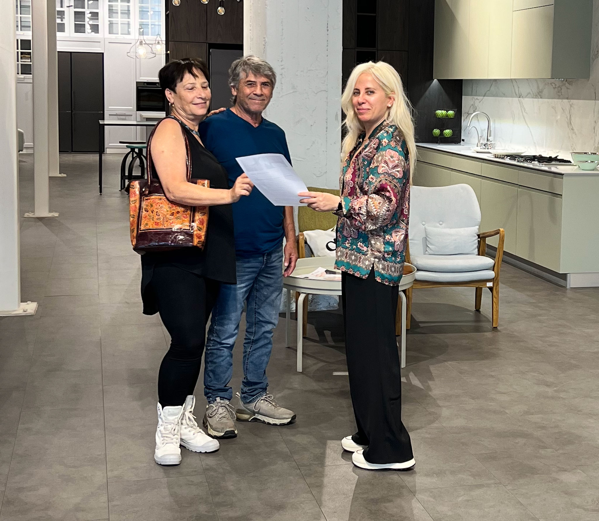
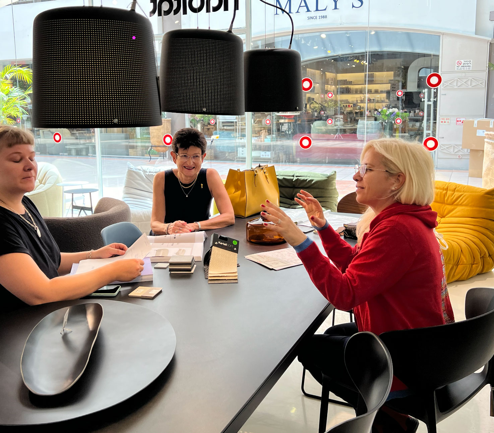
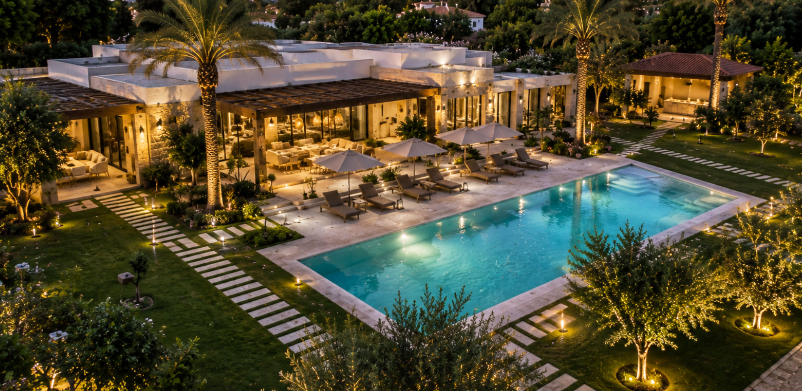

דופלקס ברחובות
חלל עשיר בשכבות, תאורה, חומרים ונגרות עם תשומת לב לאווירה ולפרטים.
אדריכלות ועיצוב פנים שמתחילים בהיכרות אמיתית אתכם, ממשיכים בתכנון מדויק ובליווי צמוד, ומסתיימים בבית שמספר את הסיפור שלכם.
לתיאום שיחת היכרותWhatsApp ללינדהאני רוצה להבין איך אתם חיים, מה חשוב לכם ומה הייתם רוצים להרגיש בבית. משם נבנה התכנון, החלוקה, התאורה, הנגרות, החומרים והפרטים הקטנים. אני מלווה את התהליך גם בשטח, מול בעלי המקצוע ובבחירות, כדי שלא תישארו לבד עם מאות החלטות.

בפרויקט של חנה התכנון כלל את החלל המרכזי, המטבח, הסוויטה, חדרי הרחצה ושירותי האורחים, וגם את פיתוח השטח, הכניסה, החצר והתאורה החיצונית. שפה אחת שמתחילה כבר בדרך אל הבית.


“שיפוץ יכול להיות מאוד מתיש, אבל איתך זה היה מסע של כיף. מעולם לא הרגשתי לבד. היית הרבה יותר ממעצבת... תמיד היית נוכחת בבית יחד עם אנשי המקצוע ועמדת על דיוק בביצוע.”חנה
“הבית כולו הוא פיסות של אומנות. כל מי שנכנס משתאה ואומר שהוא יחיד במינו.”
לאורך התהליך אני נמצאת אתכם בבחירות, בהתלבטויות, בחנויות, בשטח ובקבלת ההחלטות. המטרה היא שתרגישו שיש לידכם מישהי שמכירה את הבית ואתכם ושומרת גם על התמונה הגדולה וגם על הפרטים.


מדירה עירונית ועד בית פרטי ונחלה.
חלל עשיר בשכבות, תאורה, חומרים ונגרות עם תשומת לב לאווירה ולפרטים.

בית עירוני שהוא גם מרחב עבודה ויצירה, עם פתרונות שמתאימים לחיים האמיתיים.

אדריכלות ותכנון הקשר בין הבית, החוץ והשטח כחלק מתמונה אחת שלמה.

בחלק מהפרויקטים אני יוצרת אמנות ייחודית מתוך הצבעים, החומרים, האור והסיפור של החלל. היא אינה תוספת בסוף התהליך אלא חלק מהבית עצמו.
יש לכם בית, דירה או שיפוץ שאתם חושבים עליו? ספרו לי בקצרה מה אתם מתכננים, ואחזור אליכם אישית לשיחת היכרות.
לצד בתים ודירות אני מתכננת ומעצבת גם משרדים וחללים עסקיים, משלב העמדת החלל והתכנון ועד לשפה העיצובית וההדמיות. אפשר לציין זאת בטופס ואחזור אליכם בהתאם.
אני רוצה לדבר על משרד